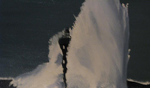
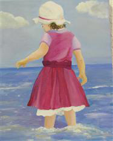

MARITIME PHOTOGRAPHY AND ART

This zone of the festival will provide a platform of creative and Irish talent with a maritime twist. Historical and contemporary paintings and photographs, some of which will be on sale, showcasing historical and present day scenes and themes will be exhibited
There will be Drawing workshops for adults & children, a photography Wall of Fame and plenty of artwork and photographs on sale.
The Maritime Photography and Art Zone can be found in the Maritime Pavilion, a warehouse at Drogheda Port.


For further information please see : www.maritimefestival.ie/photography
Location:
Days :Friday - Sunday
Times
Friday : 1:00pm - 7:00pm
Saturday: 10:00am - 7:00pm
Sunday : 12:00pm - 5:00pm